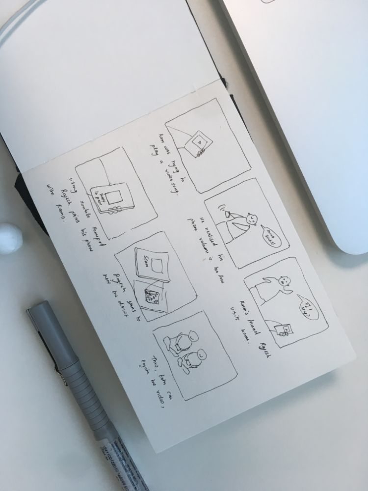
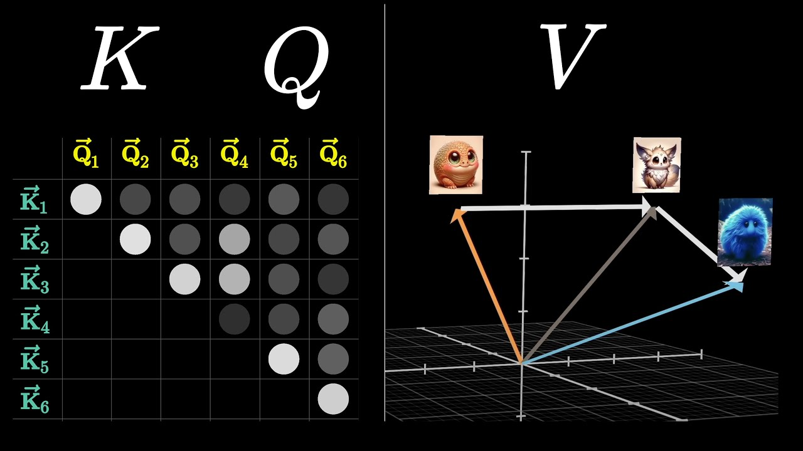
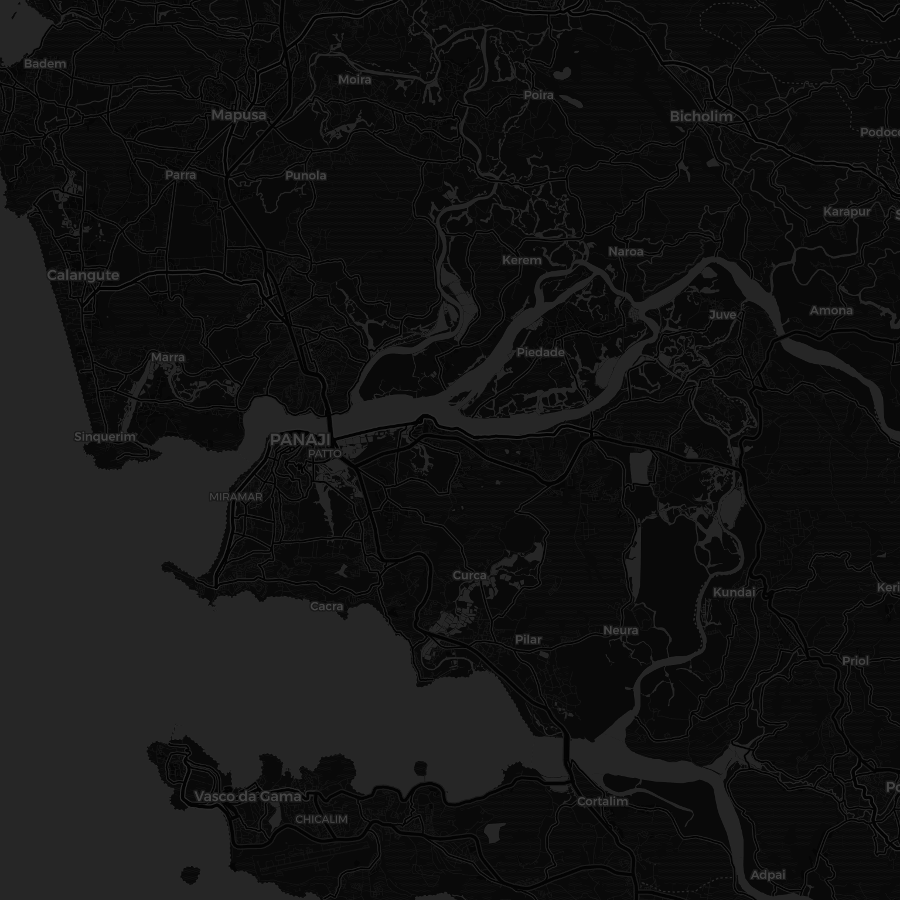
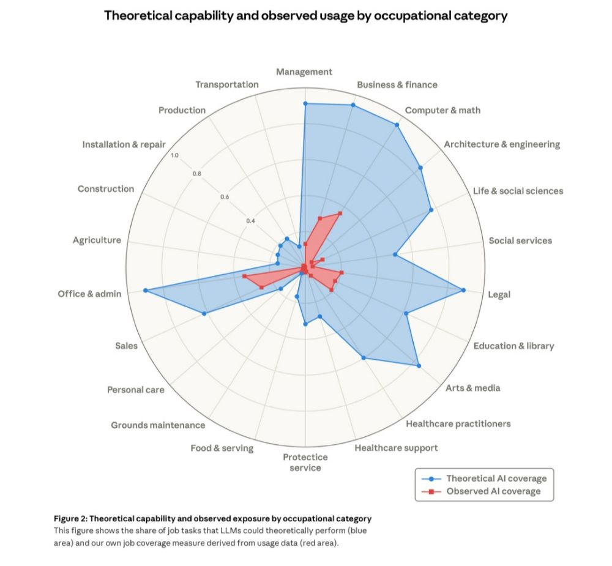
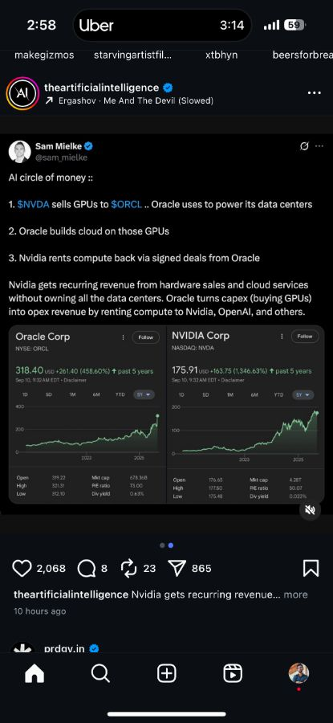

| Tool | Price /mo | Best for |
|---|---|---|
| Notion | $0–$18 | Docs + wiki |
| Linear | $0–$14 | Product teams |
| Asana | $0–$25 | Task tracking |
| ClickUp | $0–$12 | Value |
| Monday | $9–$19 | Dashboards |
| Airtable | $0–$20 | No-code DB |
| Trello | $0–$10 | Kanban |
| Jira | $0–$14 | Eng teams |

✦ Storyboard
▶ YouTube
Attention in transformers, visually explained

1
2
3
4
✦ 5 days in Goa
© OpenStreetMap · CARTO

A anthropic.com
Which economic tasks are exposed to AI
ItemCost
1Flights$620
2Stay$480
3Scooter$70
ΣTotal$1,420

✦ Trip plan
7am ferry. Ask Sam re: budget. Pack light.

✦